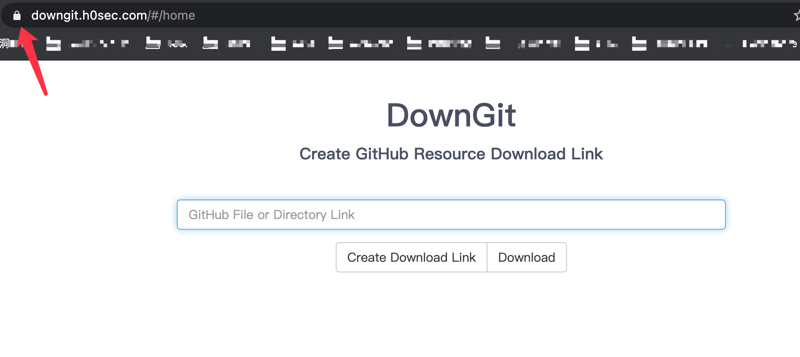

只能为每个 GitHub 帐户创建一个用户或组织站点；而项目站点没有限制
也就是名为 <user>.github.io的仓库。想要创建更多的GitHub Pages页面，可以通过创建项目站点实现。项目站点的数量没有限制
有三种类型的 GitHub Pages 站点：项目、用户和组织。 项目站点连接到 GitHub 上托管的特定项目。 用户和组织站点连接到特定的 GitHub 帐户。
要发布用户站点，必须创建名为 <user>.github.io 的用户帐户所拥有的仓库。 要发布组织站点，必须创建名为 <organization>.github.io 的组织所拥有的仓库。 除非您使用自定义域，否则用户和组织站点位于 http(s)://<username>.github.io 或 http(s)://<organization>.github.io。
一、创建项目
- 新建一个仓库，名称随意。
- 进入仓库主页，点击右面的
Settings，找到GitHub Pages部分，选择Source>main即可。 - 建议勾选
Enforce HTTPS，否则访问时会出现安全警告。 - 没有出错的话，一个项目主页就建立完成了，可以通过
<username>.github.io/<projectname>访问到了
这里我新建的项目为TBOsec.github.io/DownGit 。可以看到这个地址有点丑，而且地址对大小写敏感。我希望通过 downgit.h0sec.com 这样更加美观的地址访问，那么就需要设置和绑定子域名。
二、绑定子域名
通常，当我们购买一个域名后，就可以使用它的子域名。子域名的数量、子域名长度的限制各个域名商会有所不同
以我为例，我的域名为h0sec.com，我希望使用downgit.h0sec.com 这个子域名
- 在项目仓库里新建一个
CNAME文件，并将不带协议名的裸域名写进去（downgit.h0sec.com而不是https://downgit.h0sec.com/） - 去DNS服务商的网站，给对应的二级域名添加
CNAME解析到<username>.github.io（和个人主页的相同） - 等待DNS生效，具体时间和服务商有关
- 成功后，可以通过更好看的 downgit.h0sec.com` 地址访问到了项目站点了
三、启用HTTPS
虽然现在可以通过downgit.h0sec.com访问，但是无法使用https，这是GitHub Pages本身的限制
首先，为什么要使用 https 协议？因为 https 协议提高网站访问安全性、目前越来越多的浏览器会判断当前站点支不支持https协议。
默认情况下使用GitHub Pages的给定域名则支持http和https两种协议，但是如果使用自定义域名的话，则只能通过http://访问，也就是说我们在Github上搭建 Hexo 或Jekyll 主题博客后，通过CNAME绑定个人域名后，我们只能通过http://域名来访问。
如果访问https://XXX.github.io/(即原来的GitHub Pages域名)将会被重定向到我们的自定义域名。但若直接访问https://我们的自定义域名，浏览器会报SSL_DOMAIN_NOT_MATCHED警告。
那么怎么给自己的域名加上https呢？
CloudFlare 是一家CDN提供商，它提供了免费的https服务(但不是应用SSL证书)。实现模式就是，用户到CDN服务器的连接为https，而CDN服务器到GithubPage服务器的连接为http，就是在CDN服务器那里加上反向代理。
- 注册并登录CloudFlare，并将自己域名下的
name server修改为CloudFlare的name server。 - 在CloudFlare的DNS设置域名匹配到自己的GithubPage(启用动态DNS加速)。
- 在CloudFlare的
SSL/TLS设置SSL/TLS为完全(等待一定时间实现建立连接后，就可以通过https来访问自己的 GithubPage )。 - 在CloudFlare的
边缘证书中设置路由规则。一般情况下，设置始终使用HTTPS， 这样就可以把http链接强制转换为https。
这样不管通过http访问将跳转到https，正常访问
